AI-Powered Price Comparison
for Kosovo's Grocery Market
We built an Android app and backend system that tracks prices across 14 supermarkets — using artificial intelligence to read store flyers that no traditional scraper could touch.
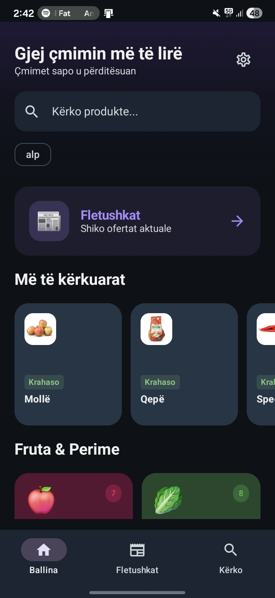
Search products, browse categories, compare prices across 14 stores
Kosovo shoppers had no way to compare grocery prices
Every supermarket publishes offers differently. Albi posts flyers on Facebook. SPAR uploads PDFs. Interex prints paper leaflets. Some stores only post on Instagram stories that disappear in 24 hours.
Finding the cheapest price on something as basic as apples meant checking half a dozen sources — different websites, different social media pages, different formats. Nobody had time for that.
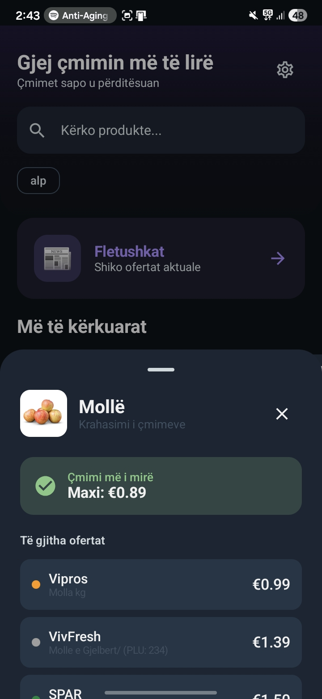
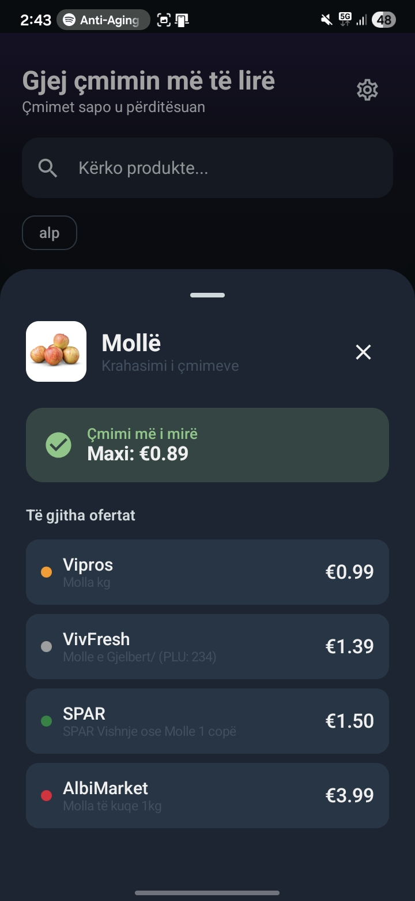
Tap any product to see who has the best price — instantly
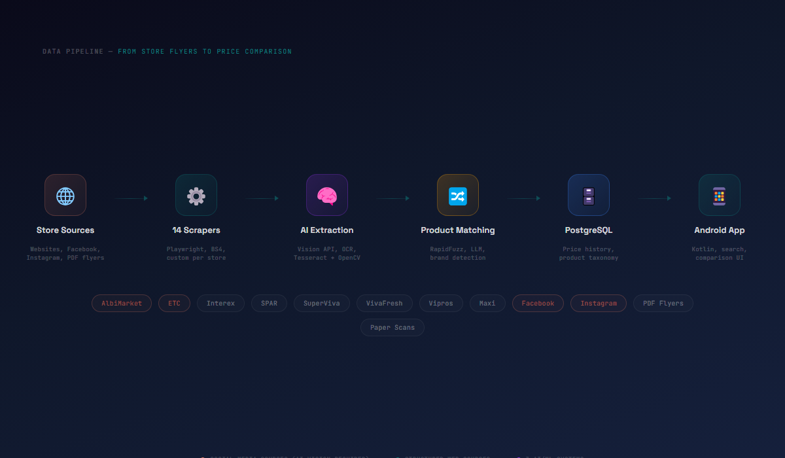
14 scrapers, one AI brain, and an app that does the work for you
We built the entire pipeline from scratch: an Android app for consumers, a FastAPI backend for data processing, and a scraping engine that pulls prices from every major Kosovo supermarket automatically.
The system covers Albi Market, ETC, Interex, SPAR, SuperViva, VivaFresh, Vipros, and Maxi — plus dedicated Facebook and Instagram scrapers for stores that only post offers on social media.
Reading flyer images that no scraper can touch
Many Kosovo stores publish offers as photographed flyer images — a photo of a printed leaflet posted on Facebook, a scanned PDF uploaded to a website, an Instagram story that disappears in 24 hours. These aren't structured data. They're pictures of paper.
We built a pipeline that sends these images to OpenAI's Vision API, which reads every product name, price, brand, and category from the image automatically. A blurry photo of a crumpled supermarket flyer goes in. Structured price data comes out.
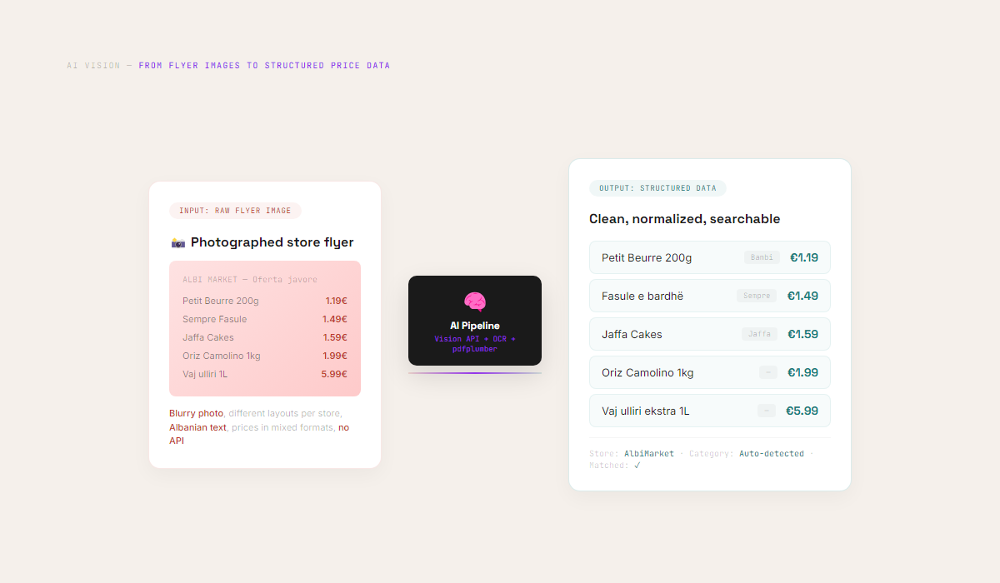
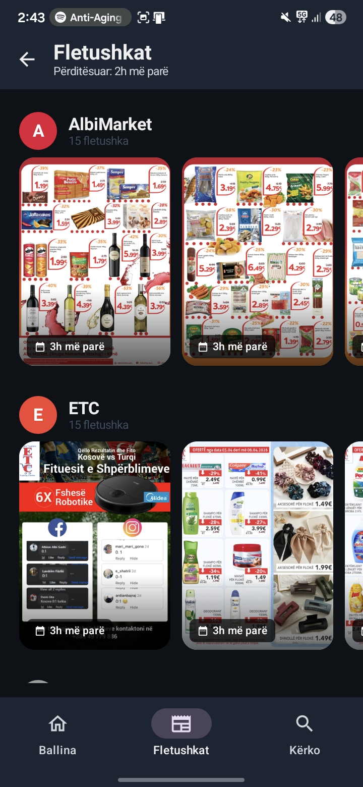
Albi & ETC Flyers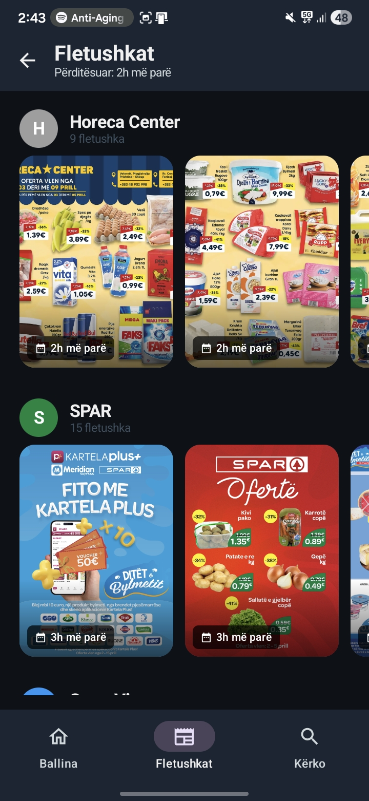
SPAR & Horeca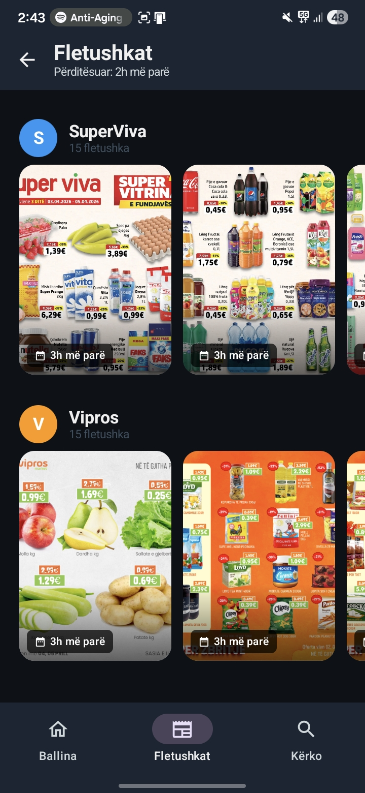
SuperViva & Vipros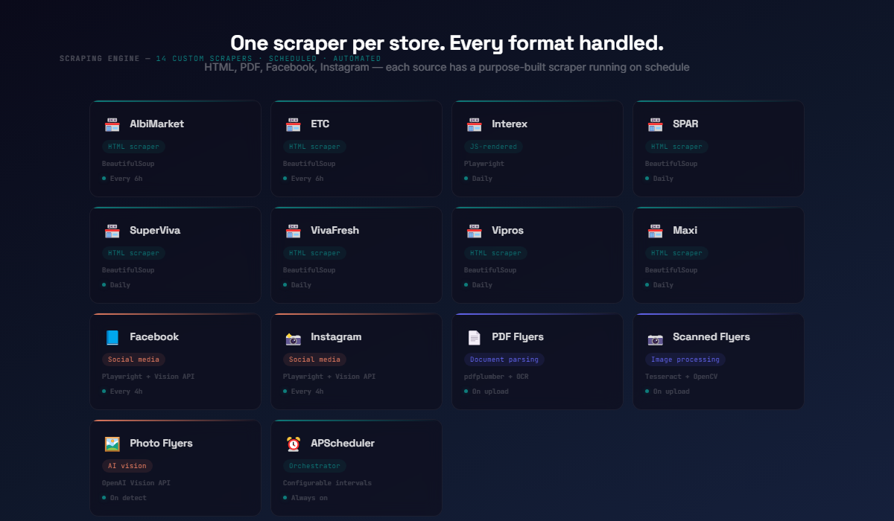
Different stores, different names, same product
"Molle e Gjelbert" at one store is "Mollë" at another. "Qumësht i freskët 1L" at SPAR might be "Qumesht UHT 1 liter" at Albi. We built a multi-layer matching system: exact matching, RapidFuzz fuzzy matching for typos, LLM-based matching for ambiguous cases, and a curated product whitelist.
The result: search "mollë" and instantly see prices from every store that sells apples — regardless of what each store calls them.
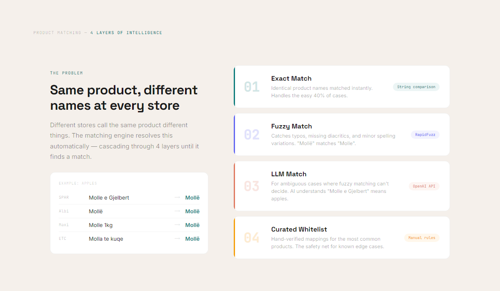
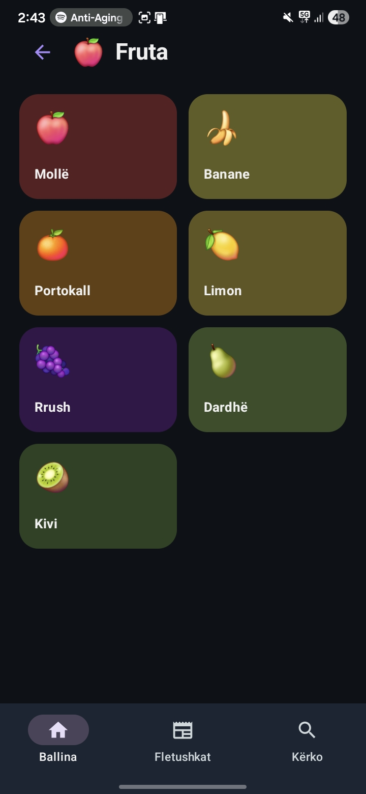
Fruit Categories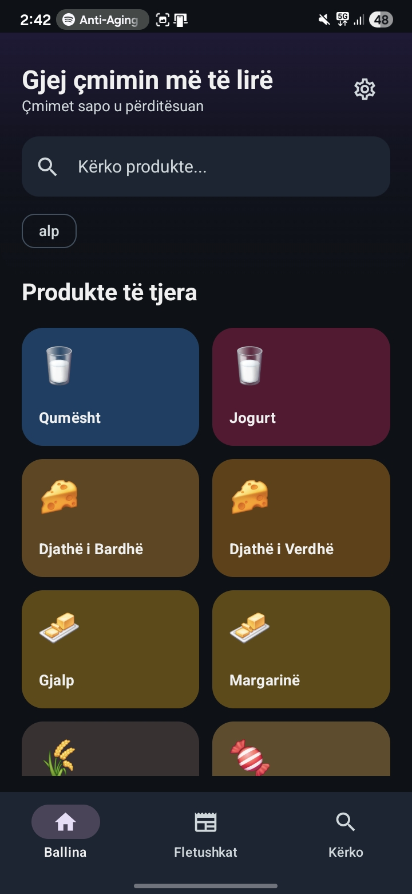
Dairy Products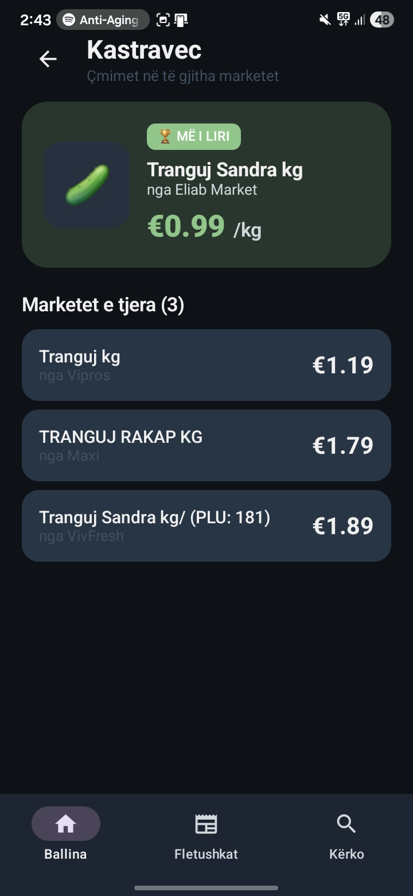
Fuzzy Matching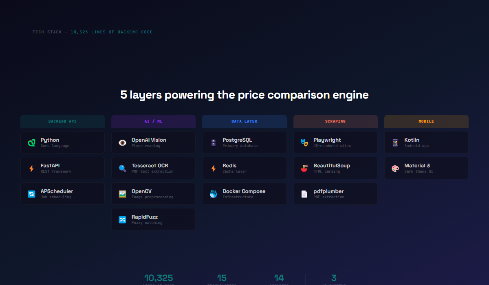
The numbers
- 14 supermarkets tracked
- 10,325 lines of backend code
- 14 custom web scrapers
- 3 AI/ML systems (Vision API, LLM matching, OCR)
The same techniques that power KuMaLire — web scraping, AI-powered data extraction, fuzzy matching, scheduled pipelines — solve problems across every industry. If your business involves gathering data from multiple sources, we can build a system that does it automatically.
Tech Stack
- Python / FastAPI
- PostgreSQL / Redis
- OpenAI Vision API
- Playwright / Scrapers
- Tesseract OCR / OpenCV
- Kotlin / Android
- Docker Compose
- RapidFuzz / APScheduler
Timeline
- 2025 — Ongoing
- Personal project
Team
- Fisnik Kurti — Everything
Drowning in data from too many sources?
We build systems that gather, clean, and centralize information automatically — so you can make decisions instead of collecting spreadsheets.
Let's Talk About Your Data